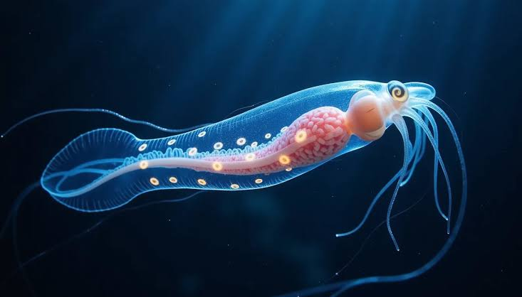
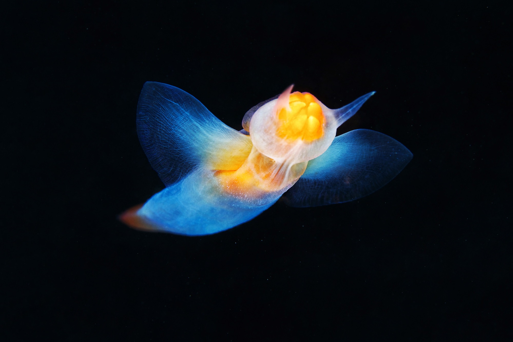
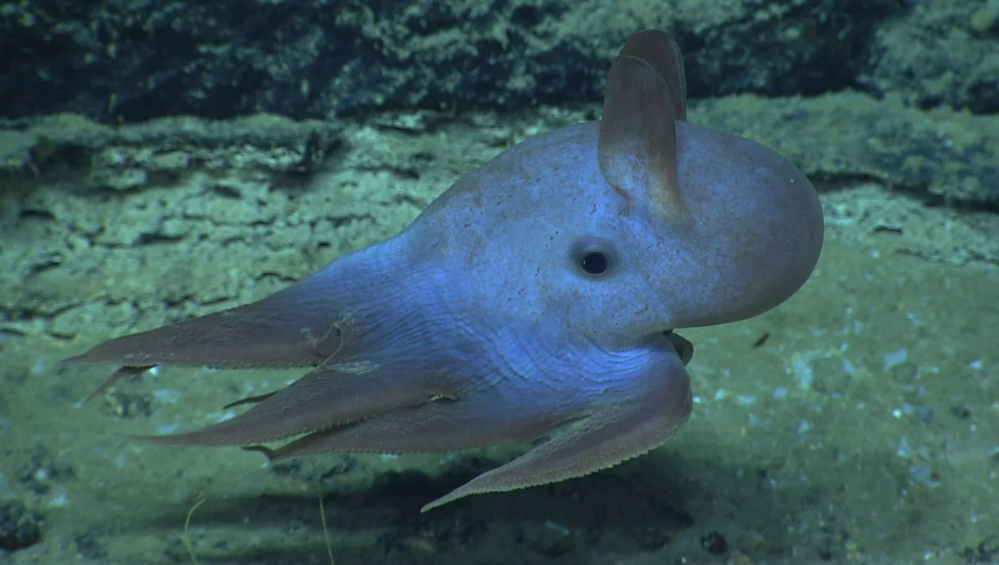

Glass Squid
The glass squid,a member of the Cranchiidae family, are well known for their transparent bodies as a form of escaping predators
Sea Angel
Sea angels are appearingly ethereal beings with a body that emanates light, they are a type of pteropod, or winged-snail.
Dumbo Octopus
The Dumbo octopus has ear-like fins that help to propel it quickly through the water. they are typically pretty small, as they grow around a mere 8 inches in adulthood.